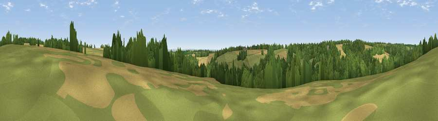

Viewpoint near Woodmancote
#39208 in England · top 75% of its area beats it · near Woodmancote · access?Where it is
The exact computed spot (SO 98925 09375). Click the marker for map links.
Public access: no public right of way or access land is recorded at this exact spot — it may be on private land. Computed from Natural England's CRoW access layer and OpenStreetMap rights of way — not the legal definitive map. Always verify locally.
The view, rendered

A 360° render of this exact spot computed from the terrain model, tree cover and land cover — summer colours, afternoon light, calibrated against photographs of famous viewpoints. Real trees, hedges and buildings will differ in detail.
The panorama
Grey silhouette: terrain skyline in each direction (720 bearings, Earth curvature and refraction included). Dashed green: skyline with trees (+15 m) and buildings (+8 m) as obstacles. Blue strip: how far the ground is visible on each bearing.
Where the view opens
Wedge length = distance to the farthest visible ground on that bearing (vegetation-aware). Rings at 10, 25 and 50 km.
What fills the view
38% woodland · 38% grassland · 24% cropland ·
Angular shares of the visible panorama (visual magnitude), not map area. Landscape diversity 0.48 (0–1 Shannon).
Key numbers
More beautiful places nearby
The staircase of upgrades: each row has a higher view potential than everything closer. Driving times are estimates from straight-line distance, calibrated against real road routing — check an actual route before setting out.
| Place | Direction | Drive | Score |
|---|---|---|---|
| Pen Hill | N · 3 km | ~8 min | 66.4 |
| Birdlip Hill | NW · 8 km | ~16 min | 71.7 |
| Viewpoint near Witcombe | NW · 9 km | ~18 min | 72.2 |
| Viewpoint near Leckhampton | NNW · 10 km | ~19 min | 73.7 |
| Viewpoint near Leckhampton | NNW · 10 km | ~19 min | 77.8 |
| Viewpoint near Great Witcombe | WNW · 11 km | ~21 min | 80.5 |
| Nottingham Hill | N · 19 km | ~33 min | 80.9 |
| Viewpoint near Bredon's Norton | N · 31 km | ~48 min | 81.3 |
51.78304, -2.01699 · source: screening · position refined by local search. Computed location — check access rights before visiting.